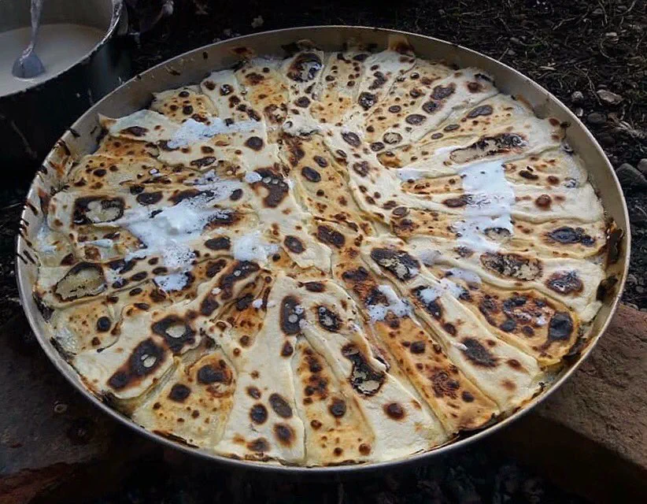

Instruktioner till att laga
-
Vispa ihop mjöl, ägg, salt och mjölk till en smet. Den ska ha samma konsistens som pannkakssmet. Låt smeten vila i minst en timme – helst över natten.
-
Rör ihop ingredienserna till fyllningen; smält smör, crème fraiche och kefir eller yoghurt.
-
Värm ugnen till 250 grader på grillfunktion.
-
Ta en rund bakplåt med en diameter på cirka 38 cm, smörj med lite matolja.
-
Gör ett stjärnformat mönster genom att från mitten och utåt (eller utifrån och in om du tycker det blir lättare) spritsa eller hälla en matsked smet till en avlång trekantig remsa. Lämna lite plats mellan varje degremsa för fyllningen. I mellanrummen häller du lite av fyllningen, så att hela plåten är växelvis en remsa smet och en remsa fyllning.
Sätt plåten i ugnen och grädda i cirka tio minuter tills den är gyllenbrun.
Tag ut plåten och häll nu på smet där du tidigare hade fyllning och fyllning där det tidigare var smet. Fortsätt grädda och fylla på tills all smet och fyllning är slut, vilket säkert kan ta två timmar.
Servera med de tillbehör du vill ha.

Ingredienser
Vart du kan köpa dessa ingredienser.